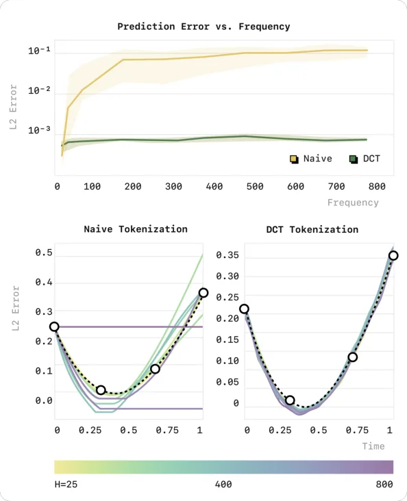
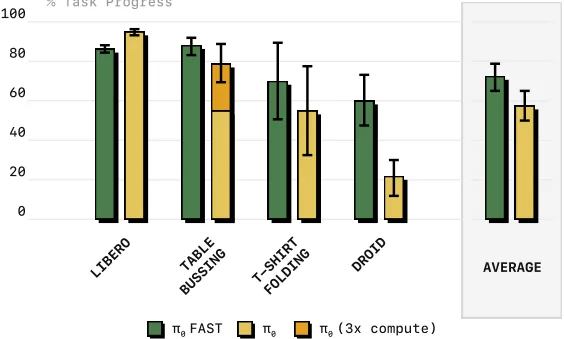
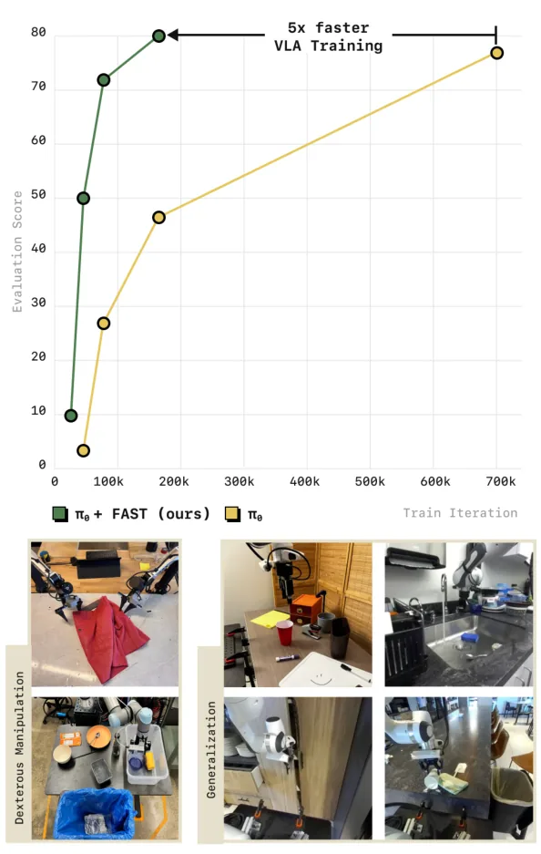
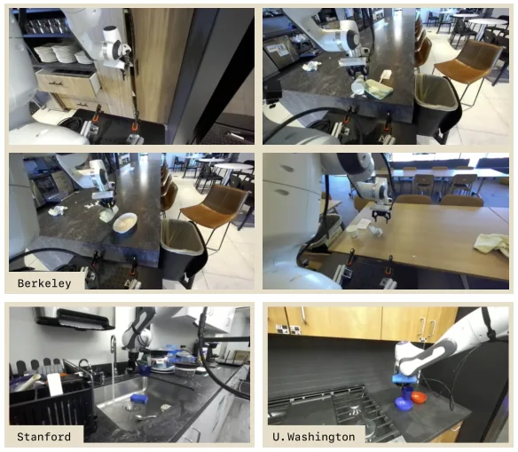

💡速记层 · 思想 / 逻辑 / 方法
默认读完就走的一层——只讲思想、逻辑、方法；效果只作验证。要核对原文/钻细节再看下面的「深读层」。
- 高频机器人数据的 action chunk 中，相邻时刻动作变化极小，naive binning tokenization 产生大量重复 token（50Hz T-shirt folding：700 tokens/chunk）。
- 自回归训练的学习信号正比于 \(T_i\) 相对 \(T_{1:i-1}\) 的边际信息量；重复 token 使边际信息趋近于零，模型陷入"复制最近 token"的局部最优。
- 根因在于 tokenization，而非模型架构或数据——相同数据不同频率采样，naive 方案性能随频率单调下降。
- 借鉴 JPEG 的思路：DCT 将时序 action 变换到频域，平滑的动作信号在低频分量上就能被充分表达，高频分量大多为零。
- DCT 后稀疏矩阵 → 按列（低频优先）展平 → BPE 消除零值、合并高频重复组合 → 最终约 30 个高信息 token/臂；可插入任何 VLM 词表直接使用。
5x 训练加速 + 追平 diffusion π0 的灵巧操作性能；首次在 DROID 数据集上训出可零样本泛化到新环境的泛化策略；被 π0.5 预训练阶段直接采用（作为离散动作通路）。
想看具体数字（点开）
- Token 压缩率：BridgeV2(5Hz) 1.75×、DROID(15Hz) 3.6×、T-shirt(50Hz) 13.2×——频率越高压缩越多。
- π0-FAST 在 Laundry Folding、T-Shirt Folding 等最难任务上与 diffusion π0 持平（见 Figure 11）。
- FAST+ 通用 tokenizer 在所有任务上与数据集专属 FAST tokenizer 性能持平。
- 推理速度劣势：~750ms/chunk（π0-FAST）vs ~100ms/chunk（diffusion π0）在 NVIDIA 4090 上。
Track A（移动操作 VLA）直接命中：FAST 是 π0.5 预训练的底层 action tokenizer；如果你要训练或微调任何自回归 VLA（π0、OpenVLA 等），FAST+ 是开箱即用的最佳 action tokenizer。FAST 的分析使你能预判：控制频率越高，naive tokenization 越危险，换 FAST 收益越大。Track B（足式控制算法）不直接相关——本文聚焦 manipulation，未涉及 locomotion，但 FAST+ 离线实验显示对人形机器人的 action 也有不错的压缩率，有潜在迁移价值。
◆核心观点 · 证据
每条 = 中文论点 + 📍页/节 + 🔤逐字原文(Ctrl-F 锚点) + 🀄译文 + 💡解读。
We find that current approaches for robot action tokenization, based on simple per-dimension, per-timestep binning schemes, typically perform poorly when learning dexterous skills from high-frequency robot data.
Crucially, when using the naïve per-timestep tokenization scheme, this marginal information approaches zero as the control frequency of the training signal increases: for smooth signals, as timesteps get shorter the change per timestep decreases proportionally. This greatly slows down the rate of convergence during training and can make it challenging to fit complex, high-frequency datasets.

We flatten the matrix into a 1-dimensional vector of integers, interleaving action dimensions by including all low-frequency components first, and train a byte pair encoding (BPE) tokenizer to losslessly compress it into dense action tokens. The BPE step "squashes" the zero-valued components and merges frequently-occurring coefficient combinations across action dimensions.

Interestingly, FAST consistently generates roughly 30 action tokens per chunk per robot arm (i.e., 60 tokens for the bi-manual setup) in each of the domains. This suggests that FAST finds a representation that approximates the complexity of the underlying action signal, and is largely independent of the frequency of the action data.
Based on FAST, we develop FAST+, a universal robot action tokenizer, trained on 1M real robot action trajectories that cover a large diversity of robot embodiments, action spaces and control frequencies. We demonstrate that the FAST+ tokenizer effectively tokenizes a wide range of robot action sequences, from single-arm to bi-manual and mobile robots, and is a good off-the-shelf tokenizer for training autoregressive VLA models.
Overall, we find that the autoregressive π0-FAST model matches the performance of the diffusion π0 model, including on the most challenging laundry folding task, while requiring significantly less compute for training. ... the model in the evaluations above required 5x fewer GPU hours for training than the π0 model from Black et al.

we find that π0-FAST converges significantly faster than the diffusion π0 model: the model in the evaluations above required 5x fewer GPU hours for training than the π0 model from Black et al. [7].

Notably, FAST tokenization enables the first successful training of a strong generalist policy on the DROID dataset [38], which can be evaluated zero-shot in unseen environments, without fine-tuning, by simply prompting it in natural language. All prior works, including the original DROID paper [38] and OpenVLA [39], did not show zero-shot results and focused entirely on co-training or fine-tuning evaluations instead.

without BPE, there is a large number of repeated 0-tokens which dilute the learning signal and also significantly slow down inference, since models need to autoregressively predict hundreds of action tokens, ultimately leading to worse policy performance.
while π0 with diffusion typically predicts one second action chunks within 100ms on an NVIDIA 4090 GPU, the π0 model with FAST tokenization needs approximately 750ms of inference time per chunk, since it must perform more autoregressive decoding steps (typically 30-60 action tokens need to be decoded, vs. 10 diffusion steps for diffusion π0) and use the full 2B parameter language model backbone for autoregressive decoding (vs. a 300M parameter "action expert" for diffusion π0).
⎘开源状态
FAST 是该论文最直接的产出之一，开源完整。
- 代码
- 已开源 openpi（Apache-2.0；FAST tokenizer 集成于 π0 训练/推理管线）
- FAST+ 权重
- 已开源 physical-intelligence/fast（HuggingFace AutoProcessor；BPE 词表，三行代码调用）
- π0-FAST 权重
- 已开源 openpi 中包含 π0-FAST checkpoint
- 训练数据
- 部分开源 1M tokenizer 训练轨迹中含 Bridge v2、DROID、OXE（已公开），自采部分未释出
Code release. We release our pre-trained universal action tokenizer, FAST+, in a convenient HuggingFace AutoProcessor class, that makes it easy to apply the tokenizer to any new robot action chunk in three lines of code
tokenizer(action_chunk) 即可。⚖批判 · 评级
① 解决了一个真实且被忽视的问题：自回归 VLA 无法处理高频灵巧任务，根因被干净地定位到 tokenization，并通过 toy 实验完整论证——逻辑链比结论更有价值。② 方法极简且可复现：DCT+BPE 纯分析方法，无需训练神经网络，两个超参全局通用，任何人都能独立复现。③ 基础设施意义：FAST+ 已成为 pi0.5、openpi 生态的标准 action tokenizer——理解它才能理解后续工作的 action 处理流程。④ DROID 零样本结果是真实价值证明。
① 推理速度是硬瓶颈：750ms vs 100ms，这限制了 FAST 在实时/动态任务上的应用范围；论文承认但将解法留给未来工作。② 仅测 manipulation，未测 locomotion/humanoid：离线实验显示 FAST+ 对人形机器人动作压缩率良好，但没有真实策略训练验证。③ 自回归 vs 扩散的语言跟随差异：论文观察到 FAST 在 DROID 上语言跟随更好，但没有深入分析为什么——这个现象被留给未来工作，略显不完整。④ 部分基准数据集（Laundry Folding 等）是 Physical Intelligence 私有数据集，外部复现完整对比有难度。
评级：Important DCT+BPE 这条路足够清晰和有效，将成为高频 VLA 训练的标准配方；作为 π0.5/openpi 生态基础设施，这篇论文的实际影响已超出其独立结论。